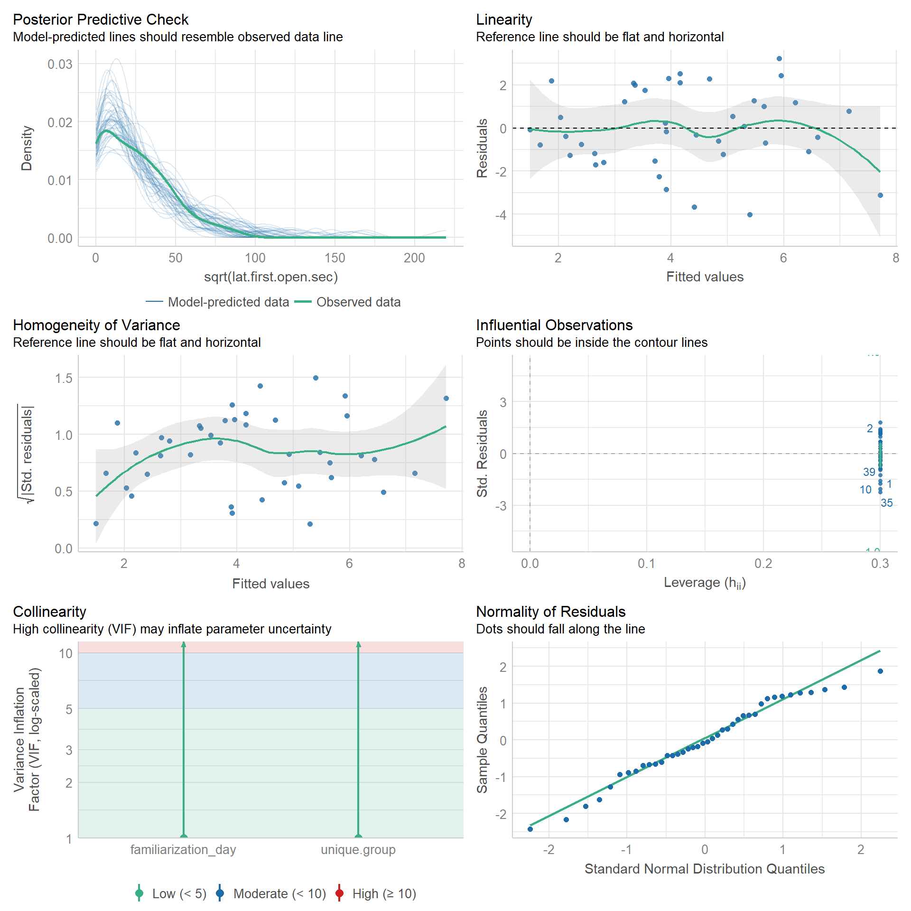
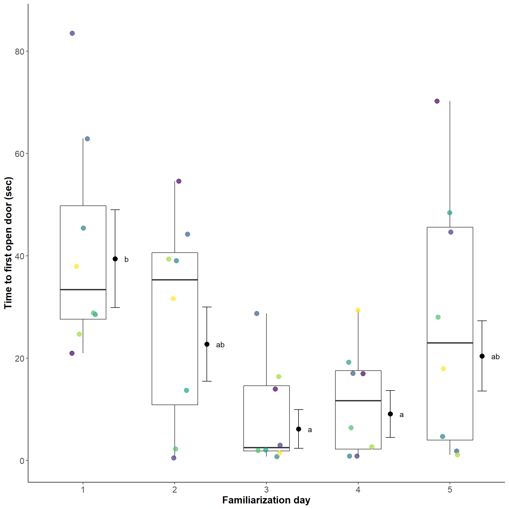

library(tidyverse) # tidy universe
library(emmeans) # post-hoc
library(performance) # model performance
library(viridis) # coloursLatency to open door during familiarization
Libraries
set.seed(1989)Data
This data set contains data of 40 pigs, 5 pigs in 8 groups. They were tested on 5 familiarization days.
Read data
dat <- read_csv("../data/latency-familiarization.csv")Rows: 40 Columns: 5
── Column specification ────────────────────────────────────────────────────────
Delimiter: ","
chr (2): unique.group, behavior
dbl (3): familiarization_day, lat.first.open.sec, group.prop.open.per.day
ℹ Use `spec()` to retrieve the full column specification for this data.
ℹ Specify the column types or set `show_col_types = FALSE` to quiet this message.Adjust data types
dat <- dat %>%
mutate_at(vars(familiarization_day,
unique.group), ~as.factor(.))
str(dat)tibble [40 × 5] (S3: tbl_df/tbl/data.frame)
$ unique.group : Factor w/ 8 levels "DG-2F","DG-2W",..: 1 2 3 4 5 6 7 8 1 2 ...
$ familiarization_day : Factor w/ 5 levels "1","2","3","4",..: 1 1 1 1 1 1 1 1 2 2 ...
$ behavior : chr [1:40] "Lift handle-snout" "Lift handle-snout" "Lift handle-snout" "Lift handle-snout" ...
$ lat.first.open.sec : num [1:40] 21 83.5 62.9 45.4 28.6 ...
$ group.prop.open.per.day: num [1:40] 0.75 1 0.9 1 1 1 0.9 0.9 0.375 1 ...Data summary
dat %>%
group_by(familiarization_day) %>%
rstatix::get_summary_stats(lat.first.open.sec,
type = "common")# A tibble: 5 × 11
familiarizati…¹ varia…² n min max median iqr mean sd se ci
<fct> <chr> <dbl> <dbl> <dbl> <dbl> <dbl> <dbl> <dbl> <dbl> <dbl>
1 1 lat.fi… 8 21.0 83.5 33.4 22.2 41.6 21.6 7.65 18.1
2 2 lat.fi… 8 0.56 54.6 35.4 29.7 28.2 20.2 7.14 16.9
3 3 lat.fi… 8 0.8 28.8 2.58 12.8 8.58 10.2 3.6 8.51
4 4 lat.fi… 8 0.9 29.4 11.7 15.3 11.7 10.5 3.70 8.76
5 5 lat.fi… 8 1.14 70.2 23.0 41.6 27.1 25.4 8.98 21.2
# … with abbreviated variable names ¹familiarization_day, ²variableLinear model
We model repeated measures over 5 days to see an effect of training during familiarization.
Run full model
mod <- lm(sqrt(lat.first.open.sec) ~
familiarization_day +
unique.group,
data = dat)Run reduced model
mod.red <-lm(sqrt(lat.first.open.sec) ~
unique.group,
data = dat)Model comparison
anova(mod.red, mod, test="F")Analysis of Variance Table
Model 1: sqrt(lat.first.open.sec) ~ unique.group
Model 2: sqrt(lat.first.open.sec) ~ familiarization_day + unique.group
Res.Df RSS Df Sum of Sq F Pr(>F)
1 32 201.85
2 28 129.05 4 72.798 3.9487 0.01153 *
---
Signif. codes: 0 '***' 0.001 '**' 0.01 '*' 0.05 '.' 0.1 ' ' 1Summary of model
summary(mod)
Call:
lm(formula = sqrt(lat.first.open.sec) ~ familiarization_day +
unique.group, data = dat)
Residuals:
Min 1Q Median 3Q Max
-4.0238 -1.1928 -0.1271 1.3955 3.2186
Coefficients:
Estimate Std. Error t value Pr(>|t|)
(Intercept) 7.710 1.176 6.557 4.15e-07 ***
familiarization_day2 -1.509 1.073 -1.406 0.17072
familiarization_day3 -3.797 1.073 -3.537 0.00143 **
familiarization_day4 -3.263 1.073 -3.040 0.00509 **
familiarization_day5 -1.761 1.073 -1.640 0.11214
unique.groupDG-2W -1.790 1.358 -1.318 0.19820
unique.groupDG-3F -0.554 1.358 -0.408 0.68635
unique.groupDG-3W -2.242 1.358 -1.651 0.10985
unique.groupDG-4F -1.273 1.358 -0.937 0.35664
unique.groupDG-4W -2.416 1.358 -1.779 0.08608 .
unique.groupDG-5F -2.039 1.358 -1.502 0.14432
unique.groupDG-5W -1.112 1.358 -0.819 0.41977
---
Signif. codes: 0 '***' 0.001 '**' 0.01 '*' 0.05 '.' 0.1 ' ' 1
Residual standard error: 2.147 on 28 degrees of freedom
Multiple R-squared: 0.432, Adjusted R-squared: 0.2088
F-statistic: 1.936 on 11 and 28 DF, p-value: 0.07755- with
car::Anova()we calculate Deviance table and \(F\) statistics, type II because of no interactions
car::Anova(mod, type ="II", test.statistic = "F")Anova Table (Type II tests)
Response: sqrt(lat.first.open.sec)
Sum Sq Df F value Pr(>F)
familiarization_day 72.798 4 3.9487 0.01153 *
unique.group 25.348 7 0.7857 0.60499
Residuals 129.050 28
---
Signif. codes: 0 '***' 0.001 '**' 0.01 '*' 0.05 '.' 0.1 ' ' 1Performance of model
performancepackage used to check model assumptions
performance::check_model(mod)
Estimated Marginal Means and multiple comparisons
emmeanspackage to obtain the estimated marginal means (EMMs) forfamiliarization_day, as back-transformed estimates
emm <- emmeans(mod,
specs = pairwise ~ familiarization_day,
type = "response",
adjust = "tukey")Note: Use 'contrast(regrid(object), ...)' to obtain contrasts of back-transformed estimatesemm$emmeans familiarization_day response SE df lower.CL upper.CL
1 39.46 9.54 28 22.342 61.4
2 22.77 7.24 28 10.352 40.0
3 6.17 3.77 28 0.865 16.3
4 9.11 4.58 28 2.143 20.9
5 20.44 6.86 28 8.797 36.9
Results are averaged over the levels of: unique.group
Confidence level used: 0.95
Intervals are back-transformed from the sqrt scale emm$contrasts contrast estimate SE df t.ratio p.value
familiarization_day1 - familiarization_day2 1.509 1.07 28 1.406 0.6290
familiarization_day1 - familiarization_day3 3.797 1.07 28 3.537 0.0115
familiarization_day1 - familiarization_day4 3.263 1.07 28 3.040 0.0376
familiarization_day1 - familiarization_day5 1.761 1.07 28 1.640 0.4854
familiarization_day2 - familiarization_day3 2.287 1.07 28 2.131 0.2356
familiarization_day2 - familiarization_day4 1.754 1.07 28 1.634 0.4893
familiarization_day2 - familiarization_day5 0.251 1.07 28 0.234 0.9993
familiarization_day3 - familiarization_day4 -0.534 1.07 28 -0.497 0.9870
familiarization_day3 - familiarization_day5 -2.036 1.07 28 -1.897 0.3422
familiarization_day4 - familiarization_day5 -1.502 1.07 28 -1.400 0.6330
Results are averaged over the levels of: unique.group
Note: contrasts are still on the sqrt scale
P value adjustment: tukey method for comparing a family of 5 estimates Plot
Compact letter display
cld <- multcomp::cld(emm$emmeans, Letters=letters) Note: Use 'contrast(regrid(object), ...)' to obtain contrasts of back-transformed estimatescld$.group <- str_replace_all(cld$.group, fixed(" "), "")plot <- dat %>%
ggplot() +
geom_boxplot(aes(x = familiarization_day,
y = lat.first.open.sec),
outlier.shape = NA, width = 0.5) +
geom_jitter(aes(x = familiarization_day,
y = lat.first.open.sec,
col = unique.group),
size = 3, width = 0.15, alpha = 0.7) +
scale_colour_viridis_d("Social group")+
scale_y_continuous(lim = c(0, 85), breaks = seq(0, 85, 20)) +
#scale_x_discrete(labels= xlabs) +
geom_point(data=cld, col="black", size=3,
aes(x=as.numeric(familiarization_day)+0.35, y=response)) +
geom_errorbar(data=cld, col="black", width=0.1,
aes(x=as.numeric(familiarization_day)+0.35,
ymin=response - SE, ymax=response + SE)) +
geom_text(data=cld, col="black",
aes(y=response, x=as.numeric(familiarization_day)+0.45,
label=.group, hjust = 0)) +
labs(x = "Familiarization day",
y = "Time to first open door (sec)") +
my_theme +
theme(legend.position = "none")plot
How to cite R
“All analyses were performed using R Statistical Software (version 4.2.0; R Core Team 2022)”.
Reference: R Core Team (2022). R: A language and environment for statistical computing. R Foundation for Statistical Computing, Vienna, Austria. URL https://www.R-project.org/.
citation()
To cite R in publications use:
R Core Team (2022). R: A language and environment for statistical
computing. R Foundation for Statistical Computing, Vienna, Austria.
URL https://www.R-project.org/.
Ein BibTeX-Eintrag für LaTeX-Benutzer ist
@Manual{,
title = {R: A Language and Environment for Statistical Computing},
author = {{R Core Team}},
organization = {R Foundation for Statistical Computing},
address = {Vienna, Austria},
year = {2022},
url = {https://www.R-project.org/},
}
We have invested a lot of time and effort in creating R, please cite it
when using it for data analysis. See also 'citation("pkgname")' for
citing R packages.version$version.string[1] "R version 4.2.0 (2022-04-22 ucrt)"citation("tidyverse")
Um Paket 'tidyverse' in Publikationen zu zitieren, nutzen Sie bitte:
Wickham et al., (2019). Welcome to the tidyverse. Journal of Open
Source Software, 4(43), 1686, https://doi.org/10.21105/joss.01686
Ein BibTeX-Eintrag für LaTeX-Benutzer ist
@Article{,
title = {Welcome to the {tidyverse}},
author = {Hadley Wickham and Mara Averick and Jennifer Bryan and Winston Chang and Lucy D'Agostino McGowan and Romain François and Garrett Grolemund and Alex Hayes and Lionel Henry and Jim Hester and Max Kuhn and Thomas Lin Pedersen and Evan Miller and Stephan Milton Bache and Kirill Müller and Jeroen Ooms and David Robinson and Dana Paige Seidel and Vitalie Spinu and Kohske Takahashi and Davis Vaughan and Claus Wilke and Kara Woo and Hiroaki Yutani},
year = {2019},
journal = {Journal of Open Source Software},
volume = {4},
number = {43},
pages = {1686},
doi = {10.21105/joss.01686},
}citation("nlme")
Um Paket 'nlme' in Publikationen zu zitieren, nutzen Sie bitte:
Pinheiro J, Bates D, R Core Team (2022). _nlme: Linear and Nonlinear
Mixed Effects Models_. R package version 3.1-157,
<https://CRAN.R-project.org/package=nlme>.
Pinheiro JC, Bates DM (2000). _Mixed-Effects Models in S and S-PLUS_.
Springer, New York. doi:10.1007/b98882
<https://doi.org/10.1007/b98882>.
To see these entries in BibTeX format, use 'print(<citation>,
bibtex=TRUE)', 'toBibtex(.)', or set
'options(citation.bibtex.max=999)'.citation("emmeans")
Um Paket 'emmeans' in Publikationen zu zitieren, nutzen Sie bitte:
Lenth R (2022). _emmeans: Estimated Marginal Means, aka Least-Squares
Means_. R package version 1.8.1-1,
<https://CRAN.R-project.org/package=emmeans>.
Ein BibTeX-Eintrag für LaTeX-Benutzer ist
@Manual{,
title = {emmeans: Estimated Marginal Means, aka Least-Squares Means},
author = {Russell V. Lenth},
year = {2022},
note = {R package version 1.8.1-1},
url = {https://CRAN.R-project.org/package=emmeans},
}citation("performance")
Um Paket 'performance' in Publikationen zu zitieren, nutzen Sie bitte:
Lüdecke et al., (2021). performance: An R Package for Assessment,
Comparison and Testing of Statistical Models. Journal of Open Source
Software, 6(60), 3139. https://doi.org/10.21105/joss.03139
Ein BibTeX-Eintrag für LaTeX-Benutzer ist
@Article{,
title = {{performance}: An {R} Package for Assessment, Comparison and Testing of Statistical Models},
author = {Daniel Lüdecke and Mattan S. Ben-Shachar and Indrajeet Patil and Philip Waggoner and Dominique Makowski},
year = {2021},
journal = {Journal of Open Source Software},
volume = {6},
number = {60},
pages = {3139},
doi = {10.21105/joss.03139},
}citation("viridis")
To cite viridis/viridisLite in publications use:
Simon Garnier, Noam Ross, Robert Rudis, Antônio P. Camargo, Marco
Sciaini, and Cédric Scherer (2021). Rvision - Colorblind-Friendly
Color Maps for R. R package version 0.6.2.
Ein BibTeX-Eintrag für LaTeX-Benutzer ist
@Manual{,
title = {{viridis} - Colorblind-Friendly Color Maps for R},
author = {{Garnier} and {Simon} and {Ross} and {Noam} and {Rudis} and {Robert} and {Camargo} and Antônio Pedro and {Sciaini} and {Marco} and {Scherer} and {Cédric}},
year = {2021},
note = {R package version 0.6.2},
url = {https://sjmgarnier.github.io/viridis/},
doi = {10.5281/zenodo.4679424},
doi = {10.5281/zenodo.4679424},
}Session Info
sessionInfo()R version 4.2.0 (2022-04-22 ucrt)
Platform: x86_64-w64-mingw32/x64 (64-bit)
Running under: Windows 10 x64 (build 19045)
Matrix products: default
locale:
[1] LC_COLLATE=German_Germany.utf8 LC_CTYPE=German_Germany.utf8
[3] LC_MONETARY=German_Germany.utf8 LC_NUMERIC=C
[5] LC_TIME=German_Germany.utf8
attached base packages:
[1] stats graphics grDevices utils datasets methods base
other attached packages:
[1] viridis_0.6.2 viridisLite_0.4.1 performance_0.9.2 emmeans_1.8.1-1
[5] forcats_0.5.1 stringr_1.4.0 dplyr_1.0.9 purrr_0.3.4
[9] readr_2.1.2 tidyr_1.2.0 tibble_3.1.7 ggplot2_3.3.6
[13] tidyverse_1.3.1
loaded via a namespace (and not attached):
[1] nlme_3.1-157 fs_1.5.2 lubridate_1.8.0 bit64_4.0.5
[5] insight_0.18.4 httr_1.4.4 tools_4.2.0 backports_1.4.1
[9] utf8_1.2.2 R6_2.5.1 mgcv_1.8-40 DBI_1.1.3
[13] colorspace_2.0-3 withr_2.5.0 tidyselect_1.1.2 gridExtra_2.3
[17] bit_4.0.4 compiler_4.2.0 cli_3.3.0 rvest_1.0.3
[21] see_0.7.3 xml2_1.3.3 sandwich_3.0-2 labeling_0.4.2
[25] bayestestR_0.13.0 scales_1.2.1 mvtnorm_1.1-3 multcompView_0.1-8
[29] digest_0.6.29 rmarkdown_2.16 pkgconfig_2.0.3 htmltools_0.5.2
[33] dbplyr_2.2.1 fastmap_1.1.0 htmlwidgets_1.5.4 rlang_1.0.6
[37] readxl_1.4.0 rstudioapi_0.14 generics_0.1.3 farver_2.1.0
[41] zoo_1.8-10 jsonlite_1.8.0 vroom_1.5.7 car_3.1-0
[45] magrittr_2.0.3 patchwork_1.1.1 Matrix_1.5-3 Rcpp_1.0.8.3
[49] munsell_0.5.0 fansi_1.0.3 abind_1.4-5 lifecycle_1.0.2
[53] stringi_1.7.6 multcomp_1.4-20 yaml_2.3.5 carData_3.0-5
[57] MASS_7.3-58 grid_4.2.0 parallel_4.2.0 ggrepel_0.9.1
[61] crayon_1.5.1 lattice_0.20-45 haven_2.5.0 splines_4.2.0
[65] hms_1.1.2 knitr_1.40 pillar_1.8.1 estimability_1.4.1
[69] codetools_0.2-18 reprex_2.0.2 glue_1.6.2 evaluate_0.16
[73] modelr_0.1.9 vctrs_0.4.1 tzdb_0.3.0 cellranger_1.1.0
[77] gtable_0.3.1 assertthat_0.2.1 datawizard_0.6.1 xfun_0.31
[81] xtable_1.8-4 broom_1.0.1 coda_0.19-4 rstatix_0.7.0
[85] survival_3.3-1 TH.data_1.1-1 ellipsis_0.3.2